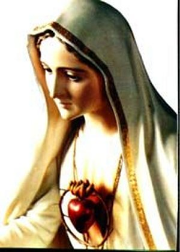

MISSÃO CUMPRIDA
BOURGES
Conduzida por amigos foi para Bourges e se hospedou na casa de Margarida La Touroulde. Agora com roupas femininas ela demorou a se acostumar. Fez amizade com Margarida, que ficou orgulhosa de hospedar em sua casa a famosa guerreira Joana d'Arc, a Donzela de Orléans. O marido de Margarida era o General das Finanças, Regneir de Bouligny. Sua casa vivia cheia de doutores, de conselheiros e comerciantes. Joana passou um longo tempo em Bourges.
Por fim, o Rei querendo ajudá-la, convidou-lhe acompanhá-lo na visita a cidade de Sully, ao Castelo do gordo Conselheiro e fingido "La Tremouille". Ela foi, por que ainda tinha alguma esperança do Rei mudar de idéia e atacar Paris. Lá, passeando e participando das conversas, viu clara a intenção do Duque de Borgonha em prolongar o Tratado de Paz. Soube também da vinda de mais 5.000 homens enviados pelo Rei da Inglaterra para ajudar na ocupação de Paris. Este fato foi confirmado pelo Duque d'Aulon, e ela, que tinha imensa vontade de ter entrado em Paris com o exército francês, para libertar a cidade dos ingleses, ficou admirada e sorriu, vendo que se confirmava a traição dos Conselheiros do Rei.
BUSCANDO REAGIR
O tempo passou. As fofocas são constantes na corte e se ouve as notícias mais absurdas. Joana mandou chamar os seus dois irmãos Pedro e João e lhes avisou que ia formar um pequeno exército e partir para Melun, mesmo sem a autorização do Rei. Os dois concordaram e quiseram ir junto. O mesmo disse o Duque d'Aulon.
Saíram de Sully: Joana, os dois irmãos, o Duque e um pequeno grupo de lanceiros. Na mesma semana da Páscoa, estavam diante dos muros de Melun. A cidade ficou alvoroçada ao saber que era a jovem guerreira. Docilmente concordaram em abrir os portões e festejaram a sua chegada com o seu contingente militar, se entregando pacificamente a aquela que era a representante do Rei.
Joana feliz olhou para as muralhas escuras que protegem a cidade, e de repente, viu um clarão surgir diante dela. Dentro deste clarão, pairando no ar, viu a imagem das suas favoritas: Santa Catarina de Alexandria e de Santa Margarida, que lhe falaram docemente: "Joana, antes de São João cairás prisioneira".
Ela estremeceu. Quis falar, mas não conseguiu. A visão desapareceu e ninguém observou nada. Contudo a visão dos muros negros ali permanecia enquanto ela entrava na cidade com o seu pequeno exército.
No dia seguinte rumou para Lagny-sur-Marne, onde também entrou sem dificuldades. Lá permaneceu 8 meses, pois os habitantes já a conheciam e gostavam muito dela. Também em Lagny o seu exército engrossou com a entrada de soldados e excelentes companheiros de armas, que entendiam de comando.
O MILAGRE DE LAGNY
Em Lagny aconteceu também um
fato admirável, que comprovou a intimidade dela com NOSSO SENHOR. Uma tarde
bateu aflitamente à porta do seu quarto um grupo de mulheres suplicando auxílio.
Uma das senhoras explicou que sua comadre teve um bebê, criança linda e
gordinha, mas que a pobrezinha logo morreu 
Joana depois de ouvir pacientemente, perguntou:
- "Mas o que eu posso fazer?"
As mulheres se ajoelharam diante dela e, quase em coro, lembraram que ela tinha uma grande amizade com os Santos e com DEUS e que poderia conseguir do SENHOR, o milagre de restituir vida a criança, ao menos para ser batizada.
O rosto de Joana exprimiu tristeza, pela compreensão deformada daquelas senhoras, e disse:
- "Eu só posso rezar e pedir a DEUS que se compadeça da criancinha". De repente, numa atitude resoluta, tentando ajudar de alguma forma, disse:
- "Levem o bebê para a Igreja e o coloquem diante do altar de NOSSA SENHORA."
Quando Joana chegou a Igreja, encontrou uma multidão cercando a criança morta. Ao lado do cadáver uma mulher chorava baixinho. Joana se ajoelhou e começou a rezar. Para ela não pediu nada, nada queria do SENHOR, por que também sabia que o seu fim estava próximo, sua missão estava terminada: foram cumpridas todas as ordens do Arcanjo, e a metade da França estava em poder do seu verdadeiro Rei. Então ela acrescentou: "Mas, SENHOR, por que não dar um pouco de vida a esta criancinha morta? Ao menos por algumas horas, para que ela seja batizada e depois sua alminha possa voar direto para Céu, para junto do SENHOR, meu DEUS?"
E rezando assim, com sua voz interior, em completo silêncio, permaneceu um bom tempo. Depois se levantou, aproximou-se do cadáver da criança e colocou as suas mãos naquela testa fria. O silêncio era profundo. De súbito um movimento, um estremecimento geral, por que da boquinha entreaberta do bebê escapou um gemido, e logo, outro gemido e a criança começou a espernear. A criança vive.
Num impulso imediato, Joana se prostrou com os dois joelhos no chão, cobrindo o próprio rosto com as duas mãos, derramando lágrimas de agradecimento pela bondade infinita de NOSSO SENHOR. Os seus ouvidos estavam fechados para as vozes do povo presente que em grande agitação, davam vivas e agradeciam a DEUS e a VIRGEM MARIA. Com os olhos fechados e as mãos unidas se afastou até a lateral do Altar de NOSSA SENHORA e observou que veio um Sacerdote e conduziu o bebê a pia batismal realizando o Batismo, na presença dos pais, dos padrinhos escolhidos, dos parentes e de todos os presentes na Igreja.


TERMINA O TEMPO DA PAZ
Estamos em 1430, aquele Tratado de "um Ano" forjado pelo Duque de Borgonha, que conseguiu a aceitação do Rei Carlos, pela intercessão maliciosa e esperta do Conselheiro gordo, chegou ao seu final, logo após a Páscoa. E ainda, ao longo dos 365 dias do Tratado, o Rei Carlos com a "sua imensa bondade", prometeu dar de presente ao Duque de Borgonha, a cidade de Compiègne, para ajudar no abastecimento de Paris. Acontece que a população de Compiègne não queria saber do Duque de Borgonha e muito menos dos ingleses, queriam continuar fiéis a França. Então, o Duque de Borgonha e os ingleses decidiram ocupar Compiègne a força. Joana e os oficiais patriotas quando souberam das notícias, eles que sempre desejaram expulsar os ingleses de todo o território francês, se revoltaram e ficaram preocupados. E em particular, ela ficou muito mais aflita e impaciente, ao imaginar que os seus amigos daquela cidade iam ficar em grande perigo. Joana tinha muitas e fieis amizades em Compiègne.
Pelo seu lado, o Duque de Borgonha preparou um grande exército e marchou para ocupar Compiègne. Guilherme de Flavy, francês patriota e comandante da cidade, preparou a defesa. Joana com o seu pequeno exército se deslocou para lá, a fim de ajudar na defesa da cidade. Mas eram muito poucos para resistir ao imenso exército formado por borgonheses e ingleses. Então tinham que buscar soluções. Ela, reunida com os oficiais e o comandante de defesa da cidade sugeriu sair de Compiègne para Soissons e, desta cidade, avançar sobre Compiègne por traz, pegando o exército do Duque de Borgonha por traz. Os oficiais gostaram da idéia e se prepararam para fazer esta tentativa, mas, chegando as portas de Soissons, Guiscard Bournel que comandava a guarnição francesa de Soissons não concordou e não deu passagem a tropa de Joana. Os Oficiais e os soldados ficaram ali acampados ao relento esperando. Joana falou para o Comandante Duque d'Aulon: "Você compreende tudo isto? Bournel, um francês dos nossos, se recusar a nos receber? O nosso Rei Carlos, desligado e indiferente a tudo no seu Castelo, desejando mesmo que Compiégne caia nas mãos do Duque de Borgonha? Você compreende estas coisas?"
D'Aulon com tristeza sacudiu a cabeça negativamente e disse: "É inútil continuar assim, não vale a pena a gente fazer tantos sacrifícios. Vamos sair daqui".
No dia seguinte cedo, Joana voltou com seu pequeno exército a Compiègne e o Duque d'Aulon foi com seus homens a Senlis, bem próximo.
Na cidade, Joana junto com Flavy, comandante de Compiégne começaram a estudar outros planos de defesa e a raciocinar sobre o posicionamento das tropas borgonhesas. Eles observaram que na frente da cidade, do outro lado do rio, na aldeia Margny estava acampado um destacamento borgonhês que não era grande. Joana então raciocinou: as cinco horas os homens devem estar descansando, despojados das suas armaduras, os cavalos soltos, os canhões abandonados. Uma boa força saindo de Compiégne neste horário, passando pela ponte e caindo em cima deles, o êxito é quase certo. D'Aulon e Flavy aprovaram o plano e logo foram se preparar para realizá-lo naquele mesmo dia.
Na hora certa Joana com o estandarte, cavalgando ao lado dos seus irmãos João e Pedro e do Duque d'Aulon e do Duque Poton, com 400 homens bem armados, quase em silêncio atravessaram a ponte.
Fizeram um forte ataque de surpresa e foram vencendo os borgonheses. Acontece que o comando borgonhês havia providenciado um reforço para aquela região e já estava a caminho de Margny, quando o soldado que fugiu do combate para pedir socorro, alcançou o grosso do reforço borgonhês. Imediatamente a galope, eles rumaram para Margny, pois estavam próximos, e desse modo, derrotaram os franceses, por que eram muito mais numerosos e prenderam Joana.
PRISÃO DA DONZELA
Joana foi amarrada e conduzida em seu cavalo, para o comandante do destacamento que a capturou. O Comandante João de Luxembourg recebeu-a e a mandou imediatamente para o seu Castelo em Beaurevoir.
Lá no Castelo, com sua humildade e modéstia, em poucos dias cativou o pessoal da casa, que começaram a gostar dela e simpatizaram com a simplicidade de Joana. Ela passou a viver como se pertencesse à família. Tinha liberdade para passear em quase todas as dependências do Castelo, mas passava a maior parte do tempo na Capela, rezando.
Pierre Cauchon, Bispo de Beauvais, que sempre foi simpatizante dos ingleses e tinha negócios com eles, no verão de 1429, quando Joana dirigindo o exército francês para libertar Reims passou por lá, ele teve que fugir as pressas para não ser preso, abandonando sua casa com todos os seus pertences. Por isso, criou um grande ódio dela, como se Joana fosse culpada dos desconfortos dele, consequências naturais de uma guerra. Agora, Joana sendo prisioneira, ele queria se apoderar da Donzela, pois na sua cabeça doente queria desforrar as suas perdas em cima da jovem, acusando-a de feiticeira, herege e idolatra, e afirmando mais, que estes crimes só podiam ser julgados pela Igreja. (Inquisição)
Está claro e evidente, que era uma acusação abominável, injusta e inverídica, e que só existia maldosamente no coração do Bispo Cauchon.
Joana sabia que este Bispo tinha interesses e amizade com o Duque Bedford comandante dos ingleses, e que o objetivo deles era levar a "bruxa" à fogueira.
NO CASTELO DE LUXEMBOURG
Presa no Castelo, sua maior preocupação era com os seus amigos de Compiègne. Seu desejo era voltar, se possível fosse, para ajudá-los a vencer os ingleses.
Por outro lado, o Bispo Cauchon continuava a assediar o Comandante Luxembourg, pedindo-lhe que lhe entregasse a prisioneira. Agora Bedford mandou oferecer ao Luxembourg 20.000 libras esterlinas, por Joana. Ele aceitou. Joana ficou sabendo da transação e ficou preocupada. Quando estava só, ficava pensando na defesa de Compiègne e agora pensava também, em qual será a sua sorte nas mãos dos ingleses"
O Castelo era um casarão de dois pavimentos com pé direito de 5 a 6 metros de altura no pavimento térreo. Ela aproximou-se da janela do seu quarto e colocou uma perna do lado de fora para saltar, quando surgiu no céu à imagem da sua Santa devota, Santa Catarina de Alexandria que disse:
- "Não saltes Joana, DEUS ajudará Compiègne".
Ela falou:
- "Se DEUS quer ajudá-los, desejo estar junto dos meus amigos nesse momento."
A imagem da Santa desapareceu no céu. Joana hesitou. Outra vez vem à memória o massacre de Compiègne. Olhou para o céu, subiu no peitoril da janela, entregou-se a DEUS e se precipitou.
PERTO DA MORTE
Só acordou dias depois, numa cama do Castelo, cheia de curativos e com o corpo todo doido. A filha mais velha de Luxembourg falou:
- "Por que fez isso? Podia ter morrido. A janela é tão alta... Foi um verdadeiro milagre de DEUS que o seu corpo não ficasse em pedaços..."
Em Novembro o Duque Bedford conseguiu as 20 mil libras para comprar a prisioneira. João de Luxembourg tranquilamente a cedeu, como se tivesse vendendo sacos de feijão, embora sabendo que os ingleses a queriam queimar viva.
NA PRISÃO EM ROUEN
Uma comitiva a transportou para Rouen. Depois de vários dias de cavalgada, chegaram à noite. É colocada acorrentada num calabouço. Com o tempo os guardas dormiram, alguns roncavam, mas predominava o silêncio. De repente, dentro do calabouço brilhou uma imensa luz. Joana ainda meio dolorida olhou deslumbrada. Dentro da luz surgiram as imagens das suas Santas Favoritas: Santa Catarina de Alexandria e Santa Margarida, sorrindo para ela e deixando o seu perfume inundar o calabouço inteiro. Com suavidade disseram:
- "É preciso sofrer com coragem. CRISTO sofreu. DEUS não esquece nunca os que sofrem por amor DELE".
Elas se despediram e Joana dormiu.
A jovem de Domrémy já tinha cumprido integralmente a missão que DEUS lhe confiou, através do Arcanjo São Miguel e das duas Santas da sua predileção: Santa Margarida e Santa Catarina de Alexandria: ajudando a ocupar Reims, a fazer a coroação do Rei da França, e a expulsar os ingleses de mais da metade do território francês. Assim, ela devia estar tranquila, porque foi fiel a sua missão até o fim.
DIVULGAÇÃO NA CIDADE
Em Rouen havia uma grande agitação para o julgamento de Joana. Cauchon o terrível Bispo de Beauvais movimentou os seus fantoches, doutores da Universidade de Paris, objetivando preparar o processo condenatório. Espalharam no meio do povo um grande ódio contra Joana. Os ingleses e borgonheses que dominavam aquela região espalharam noticias mentirosas, chamando-a de feiticeira, de traidora da nação e de inimiga do rei. Como consequência o povo a ofendia, jogavam pedras e demonstrava todas as formas de rejeição e antipatia a Joana. Ela não fazia nenhum gesto e nunca reagiu a nenhuma agressão.
O Bispo Cauchon, muito sabido, também escolheu o seu tribunal, ou seja, as pessoas que iam julgar Joana. Eram 10 membros da Universidade de Paris dominada pelos ingleses, teólogos de nenhuma tolerância, borgonheses da localidade, 22 Cônegos de Rouen, todos dominados pelo Governo Inglês, e mais alguns monges de diferentes ordens religiosas. Reuniram todos e lhes deu instruções, preparando-os devidamente.
JOANA É INTERROGADA
A primeira data é fixada. Dia 21 de Fevereiro Joana d'Arc foi submetida ao primeiro interrogatório. Com 19 anos de idade e muita experiência, ela respondeu sobre a sua cidade, seus pais, padrinhos de Batismo, enumera as orações que a mãe ensinou, as quais ela reza sempre, e uma serie de perguntas, incluindo o segredo que ela disse ao Delfim, para que ele acreditasse que ela tinha sido enviada por DEUS, para coroá-lo Rei da França.
E foram quase 30 sessões de interrogatórios, que eram completados por outros interrogatórios que faziam na prisão. A moça ficou esgotada, pois foi assim em Fevereiro, Março e Abril.
Com a chegada do mês de Maio vieram outros interrogatórios, que no fim eram repetições dos outros, com as mesmas perguntas e Joana fisicamente se enfraquecia na prisão. É conduzida para uma "Abjuração" pública. Um homem, tipo de advogado do diabo ou o próprio demônio, faz acusações absurdas estribado nas modestas palavras da jovem. Ele invertia todos os sentidos dos fatos. Ela reagiu. Ele ameaçou. Ela exigiu que o caso fosse levado ao Papa. O homem satânico diz que o processo irá ao Papa. Joana grita "Que Não" , que ela queria estar pessoalmente diante do Papa e ser interrogada por ele. A gritaria e a confusão é geral. E assim vai correndo o processo. E ela não assina a "Abjuração" e é condenada a morrer na fogueira.
Confessa e Comunga na prisão com o Padre Pedro Mauricio, e ficou tranquila e disse:
- "Hoje estarei com JESUS no Paraíso".
MORTE DE JOANA
Era o dia 30 de Maio de 1431. Os carrascos entraram na prisão, arrancaram a roupa dela e lhe vestiram um camisolão branco. Na cabeça colocaram um chapéu de papel, onde estava escrito: "Herética, relapsa, apóstata e idólatra".
Joana caminhou como num pesadelo, e subiu na carreta. Por onde passava a multidão se agitava numa grande algazarra. Do meio da multidão saiu um Padre, que subiu na carreta, se ajoelhou chorando aos pés da jovem e lhe pediu perdão. Era o mestre Loiselleur, um dos membros do tribunal que a condenou. O remorso lhe oprimia a mente, por que já estava percebendo a sua inocência. Ele se aproximou e beijou respeitosamente a bainha do vestido dela. Joana cristãmente lhe perdoou com um ligeiro sorriso. Os soldados ingleses se revoltaram com a atitude do Padre e gesticularam. O Padre desceu da carreta com lágrimas nos olhos e sumiu no meio da multidão. Joana permaneceu rezando. O cortejo percorria as ruas estreitas de Rouen. Chegaram a Praça do Mercado Velho. Os soldados fizeram Joana descer da carreta com a ponta das lanças. Perto do cadafalso ela ouviu os oradores, a palavra do Bispo e a sua condenação definitiva. Totalmente inocente e pura, sem qualquer culpa, se ajoelhou e permaneceu rezando. Veio a ordem: "Levem-na!" Os soldados levaram Joana para o cadafalso, onde se erguia um grosso poste, emergindo de um monte de lenha. Eram 9 horas da manhã. Ela foi amarrada ao poste. Pediu uma cruz da Igreja. Irmão Isambart foi correndo e pegou um crucifixo numa das duas Igrejas existentes na Praça: Igreja do Santo Salvador e Igreja de São Miguel Arcanjo, e voltou correndo e ergueu a cruz diante da face dela. Joana beijou e adorou JESUS Crucificado.
A fogueira é acesa. O fogo impiedosamente vai crescendo e rapidamente começa a lamber os membros inferiores da jovem que retorce e grita de dor. Com os olhos fitos na Cruz, pronuncia incessantemente o nome de JESUS. Quanto mais forte é a dor, em face das queimaduras produzidas pelo fogo que cresce, mais agudo e alto é o seu grito, da mesma forma que com mais força clama por JESUS.
Reina pavor na multidão. Muitos afastam o rosto daquele terrível espetáculo, fecham os olhos, tapam os ouvidos. Não querem encarar aquele vulto branco que grita e se retorce engolido pelas chamas.
Joana sofre. Seu corpo está totalmente envolvido pelas chamas. Ela sente que chegou o final da sua existência. Num último olhar para a cruz no alto da Igreja dá um forte e derradeiro grito, e com suas últimas forças pronuncia o nome de JESUS, e morre.
O Cardeal Winchester, amigo do Bispo Cauchon, depois da execução, deu instruções aos carrascos chefiados por Geoffroy Thérage, com a recomendação de recolher integralmente as cinzas, não deixando nenhum vestígio, a fim de evitar que fossem utilizadas como relíquia ou bruxaria.
Às 15 horas os três homens chegaram a Praça do Mercado Velho de Rouen para recolher as cinzas da condenada. Além das ferramentas, levaram óleo, enxofre e carvão para transformar em cinza os restos de Joana. Em cima do cadafalso, munidos com ferramentas, se inclinaram para recolher e juntar o material, quando de repente, eles se espantam. O que estão vendo rouba-lhes a voz... No meio das cinzas, intacto, bonito e grande, estava o coração de Joana! O coração humilde e fiel, que o fogo não tinha conseguido consumir!
Com certa emoção, meio atordoados, mas cientes da ordem recebida e com receio de alguém estar observando, derramaram enxofre, carvão e óleo em todo o monte e puseram fogo. Esperaram um pouco. Assim que apagou, jogaram um pouco de água e recolheram o material num saco, e em seguida, foram em direção ao Rio Sena, aquele mesmo que vem de Paris, e no meio da Ponte Mathilde, situada depois da ponte atual denominada Ponte Joana d'Arc, lançaram o saco com as cinzas no Rio Sena.
DERRADEIRA NOTICIA
Menos de cinco anos depois que mataram Joana d'Arc, o truculento Felipe "o Bom", Duque de Borgonha, rompeu com os ingleses por ocasião do Tratado de Arras. O famoso Duque de Borgonha aliou-se aos franceses (amigos de Joana), os chamados armanhaques do Rei Carlos VII. No ano seguinte o Duque Bedford, o chefe inglês na França, morreu. A Inglaterra ficou sem comando forte na França. Juntos os borgonheses e os armanhaques, formaram o grande exército Francês que logo expulsou os invasores ingleses, terminando com a "Guerra dos Cem Anos".
Por outro lado, o Rei Carlos VII mudou muito, agora cercado com Conselheiros mais inteligentes, responsáveis e mais patriotas, dirigiu o país com respeito e dignidade. Ele, que não ajudou Joana, quando ela necessitava, teve remorsos. Um dia, pensou nela e se lembrou daquele julgamento covarde, perverso e horroroso, e por isso, determinou que fosse feito um Inquérito Preliminar, com a finalidade de revisar o Processo de Condenação. O Papa Calisto III nomeou como seu Delegado na França, o Cardeal Guillaume d'Estouteville para acompanhar a investigação. Como houve oposição feroz dos ingleses, para evitar complicações, o assunto entrou em fase de aprofundamento das pesquisas e provas.
Mas, pouco tempo depois, em 1455, a mãe de Joana, senhora Isabelle Romée que morava em Orléans com os dois filhos João e Pedro, estimulada pelo Governo da França, pediu oficialmente a revisão do Processo. O Sumo Pontífice Papa Calixto III, que era totalmente favorável ao novo julgamento, concordou e nomeou o Bispo de Paris Guillaume Chartier, o Arcebispo de Reims Jean Jourvenel Orsini e o Bispo de Coutances, Richard Olivier, para em harmonia com o Grande Inquisidor Jean Bréhal, Padre Dominicano e Prior do Convento de Saint Jacques em Paris, tratassem da revisão do Processo Condenatório. E tudo foi conduzido com grande critério e responsabilidade, de modo elogiável e de maneira admirável. Depois de longo e minucioso estudo concluíram que a culpa daquela "Absurda Condenação" recaía, principalmente sobre o Bispo Pierre Cauchon, que era Bispo de Beauvais e que já havia morrido.
Foram feitos inquéritos em todas as cidades principais onde Joana havia atuado. Pediram testemunhos dos Duques e Oficiais que lutaram ao seu lado: Dunois, de d'Alençon, de d'Aulon e diversos outros. Por fim, o Grande Inquisidor Jean Bréhal fez publicar um "memorandum" declarando a sua ortodoxia, ou seja, a perfeita fidelidade dos inquéritos, anulando, deste modo, a sentença condenatória de 1431. Então, para completar a Revisão do Processo de maneira perfeita, Guillaume Bouille, Presidente da Universidade de Paris, Deão da Catedral de Noyon, Doutor em Teologia e Conselheiro do Rei, elaborou um documento oficial, (o qual, aqui resumimos o conteúdo da conclusão) afirmando que "Joana d'Arc, era inocente de qualquer crime".


Nos fins do século XIX, o Papa Leão XIII tratou de cuidar da BEATIFICAÇÃO de Joana, o que aconteceu em princípios do século XX, no dia 18 de Abril de 1909. No ano de 1920, em Roma, no Vaticano, o Papa Bento XV, CANONIZOU Joana d'Arc, no dia 16 de Maio, quando foi incluída no catálogo dos Santos da Igreja.
Sua Festa Litúrgica acontece todos os anos no dia 30 de Maio.
SANTA JOANA d'ARC, além de amada e respeitada por todos é a Padroeira da França.